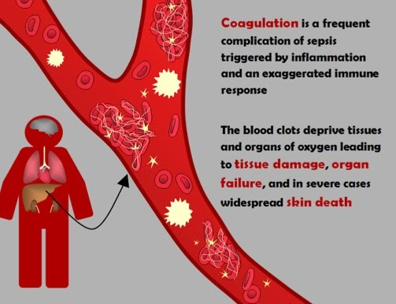

See the detailed information on
Sepsis Causes and Symptoms
Sepsis Symptoms
Sepsis is caused by bodies overwhelming and harmful reaction to an infection.
![]()
Shievering, Fever or very cold
![]()
Extreme Pain or General Discomfort
![]()
Pale or Discoloured skin
![]()
Sleepy, difficult to rouse, Confused
![]()
Short of breath
![]()
Low Blood Pressure
Who is at the risk?
Sepsis does not discriminate. It can affect anyone, of any race, of any age, at any time. However, certain factors can put one at higher risk than others. Sepsis occurs when a local infection spreads to other parts of the body including vital organ systems. Therefore, any infection puts patients at risk of developing sepsis. The most common infections that lead to sepsis are: pneumonia, abdominal infections, kidney and urinary tract infections, certain viruses (i.e. influenza) and parasites (i.e. malaria). Certain additional factors that predispose patients to develop sepsis include:
- Chronic disease
- e.g. chronic lung disease (i.e. emphysema or COPD),
- heart disease, diabetes, or peripheral artery disease
- 75+ years of age
- Male
- Tobacco use
- Previous stroke
- Use of immunosuppressive (chemotherapy or corticosteroids) agents
Causes
Sepsis can be caused by a previous or underlying medical condition but always starts with an infection. Most common are infections in the lungs (e.g. pneumonia), urinary tract, skin (e.g. cellulitis), abdomen (e.g. appendicitis), or gallbladder. Any infection that could potentially spread throughout the body or is not treated in a timely manner poses a risk of causing sepsis or septic shock. Other causes of infection can stem from invasive procedures such as open surgeries, insertion of catheters and/or procedures where bacteria could be introduced directly into the bloodstream. Sepsis can be caused by a variety of microbes, such as fungi or viruses (influenza) but the most frequent microbes are bacteria. The introduction of vaccines, such as the polio and flu vaccines, has dramatically reduced the number of viruses and bacterial infections that used to cause sepsis.
Symptoms
The symptoms of sepsis are highly variable and all depend on the initial infection - where it is located, what organism is causing the infection, and what new organs the infection can reach. In most cases, septic patients experience:
It Includes
- Fever or chills
- Fast heart rate
- Increased breathing rate
- Altered mental status/confusion
- High blood sugar levels (hyperglycemia)
- Edema
Moreover...
Many other symptoms may be present, depending on the infection. If the infection has moved to the lungs, a septic patient may experience difficulty breathing. Infection in the heart often leads to low blood pressure (hypotension) because the heart cannot pump blood as efficiently. When the infection is in the brain, patients often experience confusion and are less aware of their surroundings. If the infection occurs in the kidney(s), patients will often urinate less often because the infection stops the kidneys from functioning properly and producing enough urine. These same symptoms are present when people develop sepsis sometimes making it difficult for doctors to determine if this is just an infection or has progressed to sepsis.
Coagulation and Sepsis
The formation of blood clots, also known as coagulation, is the process of blood going from a liquid to a solid. It naturally occurs as part of the body’s defense mechanism to stop blood loss and to prevent the movement of an infection in the body. This is a hallmark of sepsis. There is a fine line between blood clotting that helps to protect the host and too much clotting that can cause damage and even death. In sepsis, due the excessive amount of inflammation that occurs, it causes drastic changes to the coagulation system. As a result, it provides an ideal environment for the formation of excess unnecessary blood clots. This becomes dangerous as it can constrict the blood vessels and no longer allow for the passage of blood to vital organs such as the heart, brain and lungs. Without oxygen and nutrient-rich blood reaching tissues and organs, they are deprived of their basic necessities causing tissue damage and even organ failure.